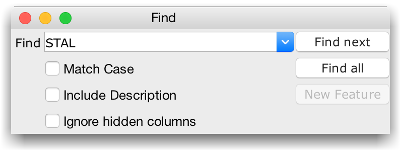

Search
The search box is displayed by pressing Control and F or selecting "Find..." from the "Search" menu.
"Find next" will find the next occurrence of the specified and adjust the alignment window view to show it, and "Find all" highlights all matches for a pattern. The "New Feature" is a quick way to highlight and group residues matching the specified search pattern throughout the alignment.
Creating Features from Search Results
If "New Feature" is selected, the feature can be given a name from a popup input box. Use the "Feature Settings" under the "View" menu to change the visibility and colour of the new sequence feature.
Selecting regions from Search Results
Press 'B' or use the Select Highlighted Columns option from the alignment window's select menu to add columns containing highlighted search results to the alignment window's column selection. Alt-'B' will add all but the highlighted columns, and Ctrl (or Cmd) -B will toggle the column selection for the highlighted region.
A quick Regular Expression Guide
A regular expression is not just a simple text query - although it can be used like one, the query is not parsed literally, but interpreted like a series of instructions defining the features of the match. For example, a simple query like "ACDED" would match all occurences of that string, but "ACD+ED" matches both 'ACDDED' and 'ACDDDDDDDDED'. More usefully, the query "[GVATC]{;5,}" would find stretches of small, hydrophobic amino acids of at least five residues in length.
The table below describes some of the regular expression syntax:
| Regular Expression Element | Effect |
| . | Matches any single character |
| [] | Matches any one of the characters in the brackets |
| ^ | Matches at the start of an ID or sequence |
| $ | Matches at the end of an ID or sequence |
| * | Matches if the preceding element matches zero or more times |
| ? | Matches if the preceding element matched once or not at all |
| + | Matches if the preceding element matched at least once |
| {count} | Matches if the preceding element matches a specified number of times |
| {min,} | Matches of the preceding element matched at least the specified number of times |
| {min,max} | Matches if the preceding element matches min or at most max number of times |
A record of all the recent queries made via the Find dialog are stored along with your Jalview user preferences. To open the search history, click on the button to the right of the query field, or press the down arrow key.
The search history keeps up to 99 queries by default. To clear the history, or modify the size of the history, right-click the text box.
Other dialogs that provide a query history
Jalview's Uniprot and PDB free text database search dialogs also provide a query history.
The query histories were introduced in Jalview 2.10.2